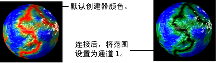
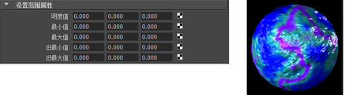

有关“设置范围”(Set Range)工具的描述，请参见设置范围(Set Range)。
使用“设置范围”(Set Range)工具设置范围
- 在纹理的“属性编辑器”(Attribute Editor)中，将“设置范围”(Set Range)工具映射到属性。
纹理属性会在您将其映射到“设置范围”(Set Range)工具时更改。

- 单击您将属性映射到其中的框。此时将显示“设置范围”(Set Range)“属性编辑器”(Attribute Editor)。根据需要调整值。

设置范围属性(Set Range Attributes)
-
值(Value)
-
Maya 将该值从旧范围（“旧最小值”(Old Min)到“旧最大值”(Old Max)）映射到新范围（“最小值”(Min)到“最大值”(Max)）。
-
最小值/最大值(Min/Max)
-
新范围内的最小值和最大值。
- 旧最小值(Old Min)、旧最大值(Old Max)
-
旧范围内的最小值和最大值。